Where it started
2024 · Shipped
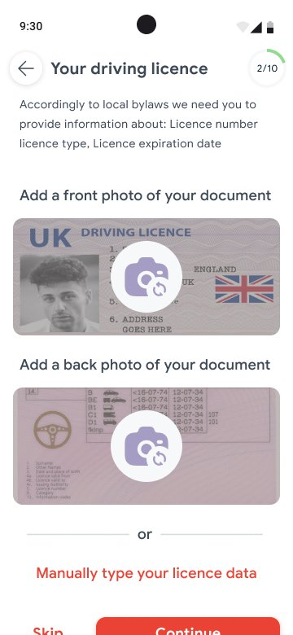
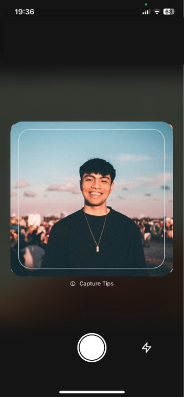
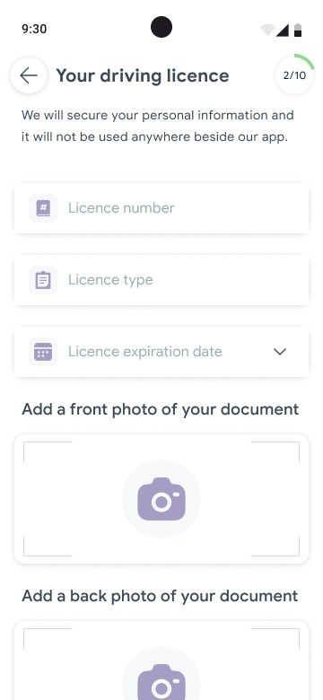

Looked right in a screenshot
First pass · AI, from my briefThe first version came straight from my brief. Every screen was there, but in motion it fell apart:
- Too fast and jumpy: the card flew in, statuses changed faster than you could read them.
- Every state announced: “Hold still”, “Great, now flip it over”, haptic labels on screen.
- No rule for problems: what stops the flow, what waits for review, which colour means what.
- A drawn card, so glare, blur and an expired licence were only claims.
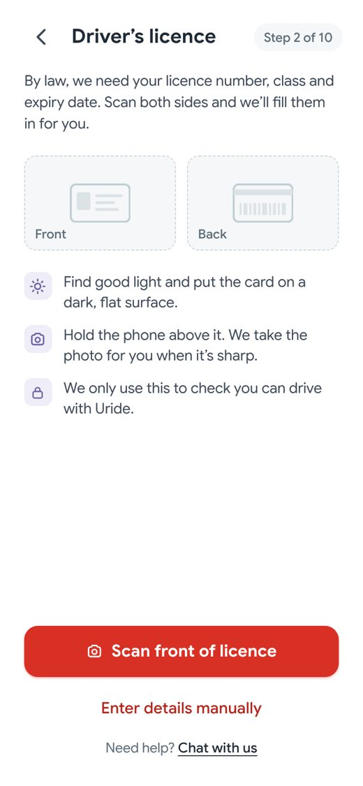
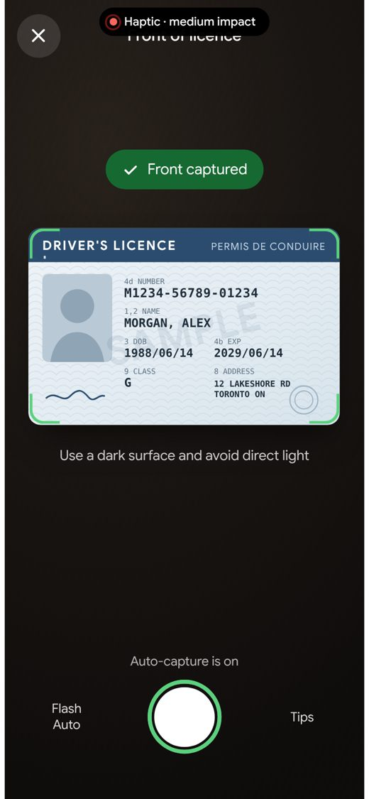
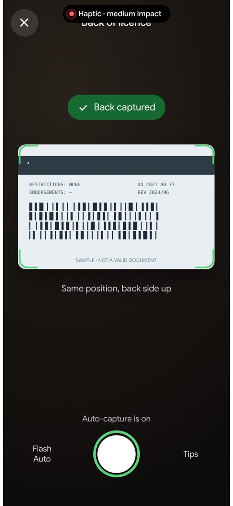

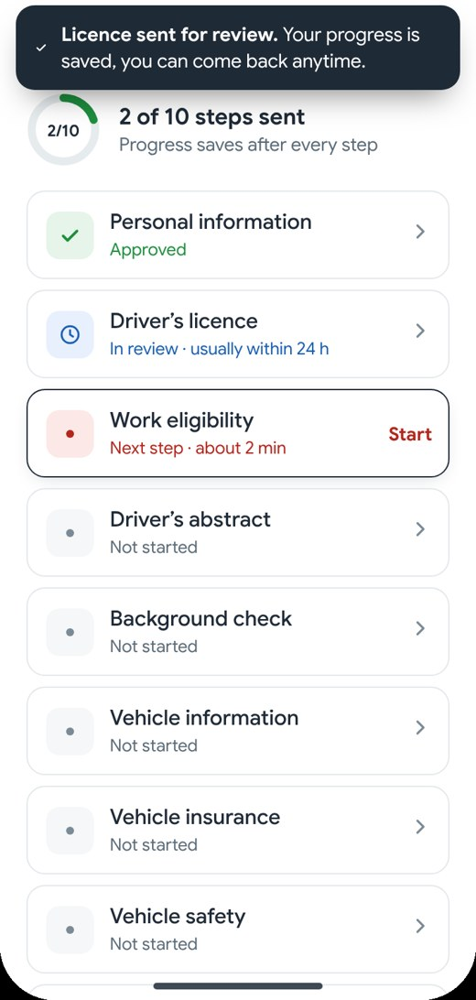
What I changed, and why
Direction · My decisionsOne rule for messages
The camera speaks only for an action, a problem or a result. Problems are amber, a taken photo is green, nothing in between. The Front/Back switch says where you are, so the message doesn’t.
Stop only when going on is pointless
Expiry is read on the phone right after the front photo, so nobody flips a card we can’t accept. Anything fixable in a second waits for one review screen.
Fix it first, retake as a fallback
Glare hid one character. Typing it is faster than shooting again: the character is pre-selected and the number pad opens. Retake stays one tap away.
Calm, honest motion
Nothing that stays the same moves. Tips light up one at a time, with no ticks: a tip is not a check. The capture ring never rewinds. A status changes in place: the colour eases, the badge draws itself.
Real footage, real problems
One take on an iPhone: an expired card, a swap, lamp glare, both sides. The back is read too: the barcode cross-checks the front.
Less to read under stress
One sentence per line, one-line hints, a two-line expired sheet that ends with “Your other steps are saved”. Status messages are announced to VoiceOver.
Five rules behind every screen
Motion system · Rules, not one-offsEvery animation follows the same rules and uses the same tokens, so they can move straight into a design system.
- Motion explains a change, it never decorates. If nothing changed, nothing moves. On the checklist only the updated step changes colour and the counter rolls.
- Enter calm, leave fast. Arrivals decelerate over about 550–700 ms, exits accelerate in about 250 ms.
- Springs without bounce for screens and sheets. A little bounce only as a reward: a tick, a status badge.
- Nothing rewinds. The capture ring fades and resets instead of spinning back.
- Readable before it moves on. Messages stay at least 4 seconds (1.5 s + 350 ms per word) and close on tap. Nothing loops.
Motion tokens
| Token | Value | Used for |
|---|---|---|
| press | 100 ms ease-out | Touch down, always under 100 ms |
| release | spring 350 · 0.2 | Button comes back |
| push | spring 550 · 0 | Screen push and back |
| sheet | spring 600 · 0 | Camera, bottom sheets |
| settle | spring 700 · 0 | Card comes to rest in the frame |
| snap | spring 450 · 0.15 | Frame corners lock on |
| pop | spring 400 · 0.25 | Ticks, status icons, badges |
| toast | spring 550 · 0.12 | Messages arrive |
| exit | 250 ms accelerate | Anything leaving |
Springs are duration in ms · bounce. Arrivals use decelerate (.05,.7,.1,1), colour changes use standard (.2,0,0,1), exits (.3,0,.8,.15).
Haptics
| Moment | Haptic |
|---|---|
| Photo taken | Medium impact |
| Glare, a problem | Warning |
| Expired, wrong input | Error |
| Saved, sent for review | Success |
| Field fixed, switch on | Light |
| Flash mode | Selection |
| Everything else | None |
Only for moments that matter. Safari on iPhone can’t play haptics, so this is the spec for the native build.
Tested on real phones
Testing · What changed afterBefore sending it anywhere, I asked designers and a developer I’ve worked with, plus one person outside tech, to go through it on their own phones and tell me where they stumbled. Then I changed the prototype.
| What they ran into | What I changed |
|---|---|
| “The green ticks on the tips look like checks the camera already passed.” | Tips light up one at a time, with no ticks. |
| “The tips look like buttons I should tap.” | They became one plain caption line. |
| “Messages disappear before I can read them.” | Shorter text; every message stays at least 4 seconds and closes on tap. |
| “I tapped Notify again and nothing happened.” | A real switch: on and off, the state always visible. |
| On one phone the whole flow had already played when the page opened. | Reduced Motion no longer skips the flow, and the prototype starts over every time it opens. |
| “Why can’t I upload from the gallery, or edit the other fields?” | Kept on purpose: a live camera proves it’s a real card, and the document is the source of truth. For a misread field I’d add “Something’s wrong?”, which sends it to a person for review. |
The result
Now · Prototype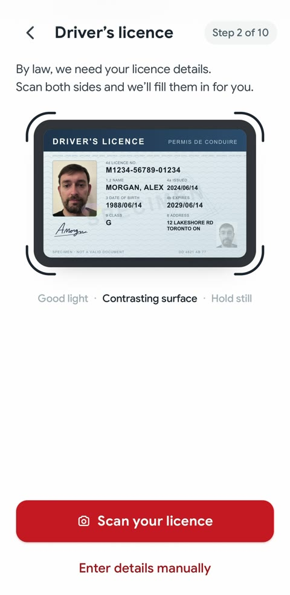
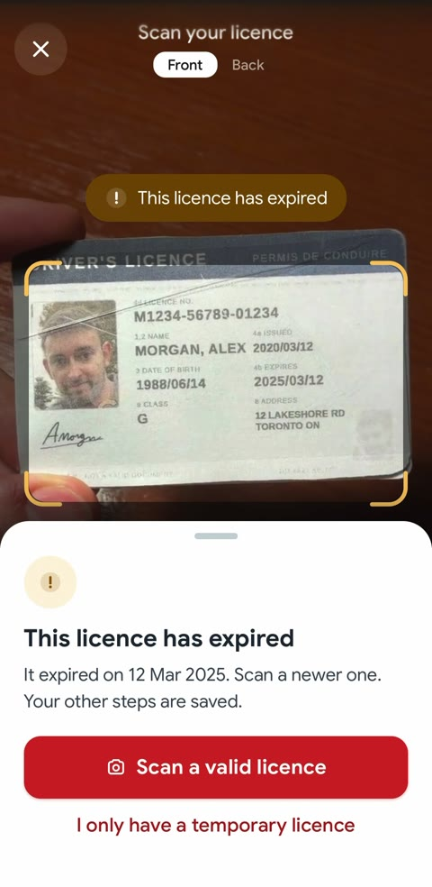
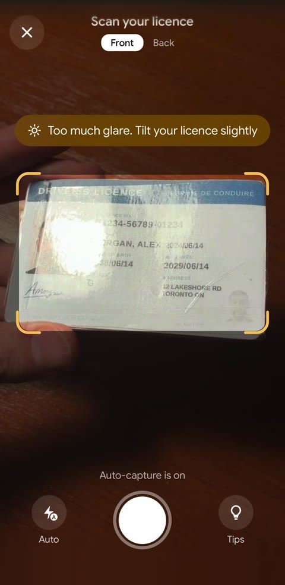
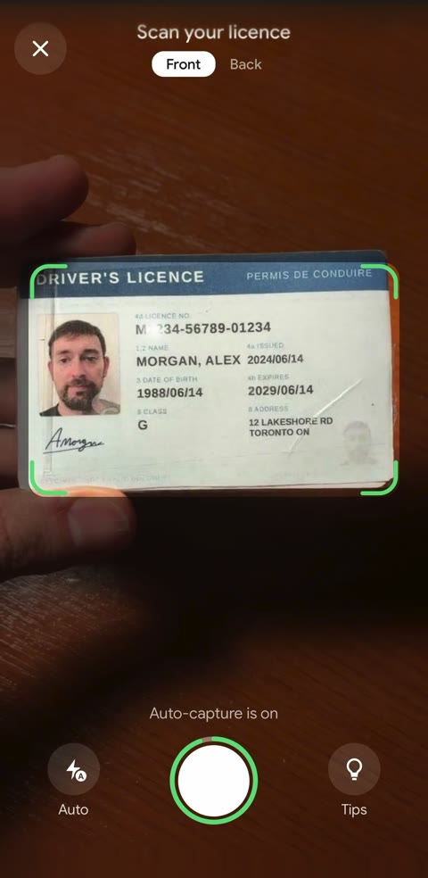
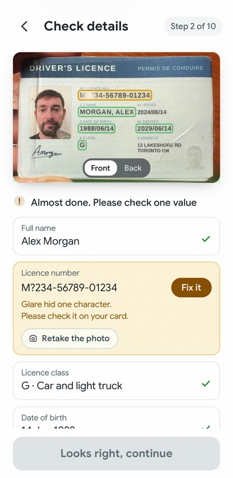
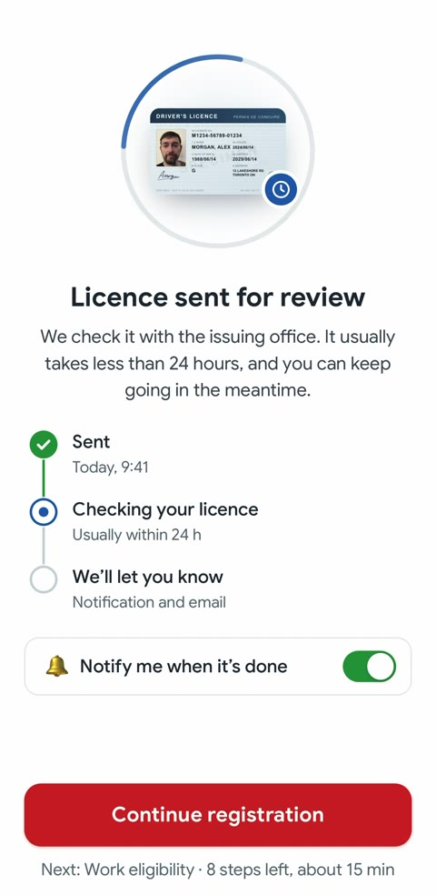
Also in the prototype
- Retake instead of Fix it: reshoots only the side with the problem.
- Tips on the camera: the same three words as the intro, each with one short how-to.
- Flash: Auto, On and Off, like the iPhone camera.
- Enter details manually, for anyone who prefers typing.
Sample data only. The card is a printed specimen with my photo, not a real document.